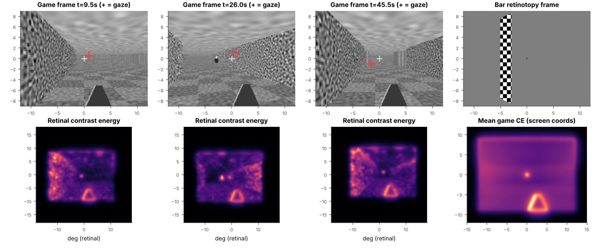
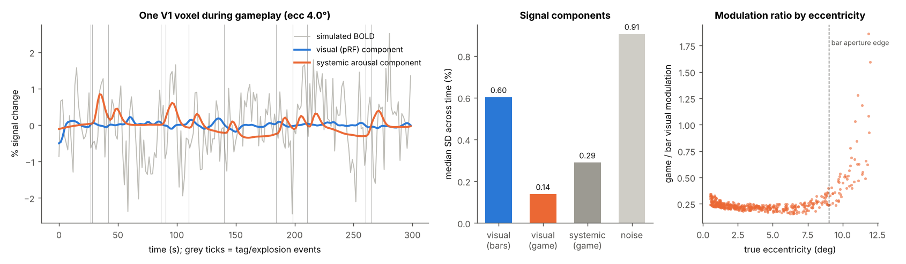
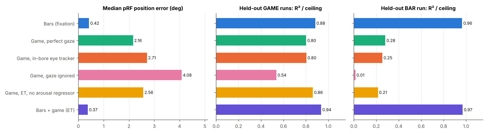
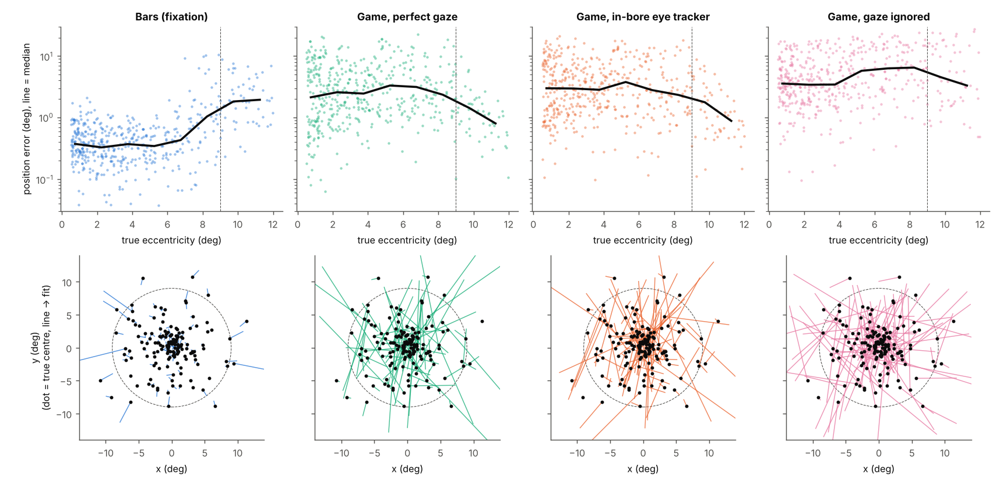
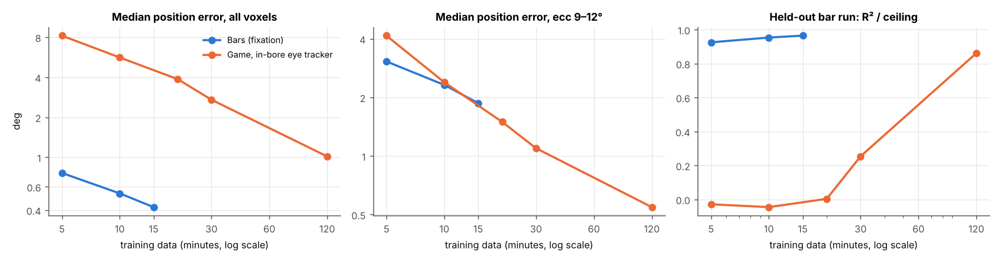
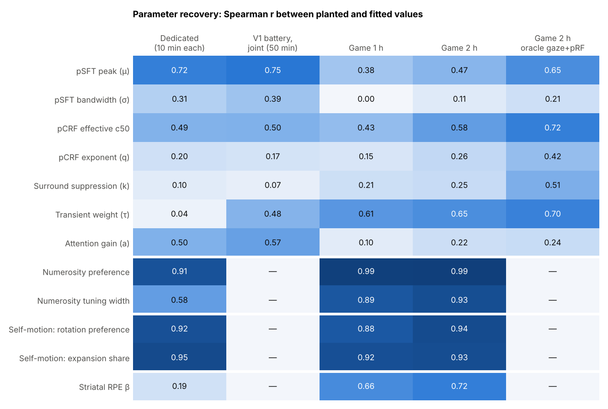
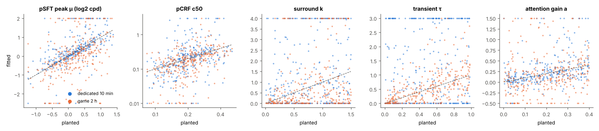
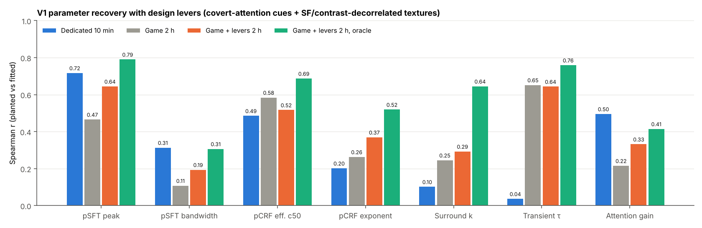
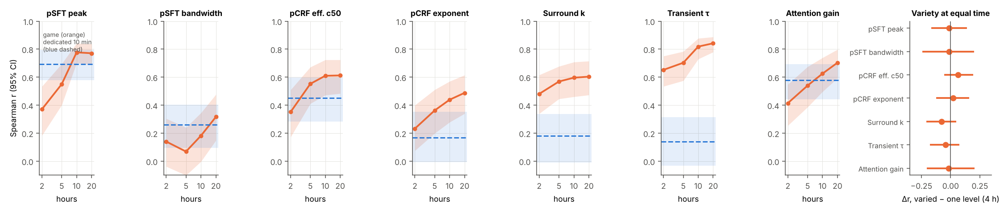

BOLDBLASTER
Round 1: pRFs from gameplay (below). Round 2: eight models from one game · Round 3: design levers · Round 4: twenty hours.
Simulation testbed: can V1 pRFs be recovered from free first-person gameplay, and what would a dynamic, NSD-style gaming dataset need?
- The game carries the spatial information; the problem is SNR. With noise-free BOLD, gameplay recovers pRFs as well as bars (0.19° median error). With realistic noise and 30 min of play, error is 2.71°, against 0.42° for 15 min of bars.
- Why: gameplay keeps V1 driven but barely modulates any one pRF. In a sustained-only V1 model, gameplay modulation is ~0.21× that of bars, so it needs roughly an order of magnitude more data per unit of information.
- The periphery is where gameplay wins. Saccades sweep the screen across the outer visual field, which a 9° bar aperture never reaches. At 9–12° eccentricity, 30 min of gameplay already beats bars (1.10° vs 1.87°). Central pRFs suffer most under gameplay.
- Localizer fits transfer to gameplay: pRFs fit on bars predict held-out gameplay at 88% of the noise ceiling. That is the cross-check anyone using the dataset would want.
- Gaze is mandatory: ignoring eye position gives 4.08° error. A realistic in-bore tracker costs little over perfect gaze (2.71° vs 2.16°).
- Log engine events: arousal-locked systemic BOLD alone pushes error to 0.86°; a regressor built from logged game events brings it back to 0.30°.
- Design implication: deep sampling (hours per subject) plus a short controlled localizer in the same people. Bars + game together gave the best fits (0.37°). With 2 hours of gameplay (eye-tracker gaze), median error falls to 1.01° (vs 0.42° for 15 min of bars), and 0.55° beyond 9° eccentricity, where bars give 1.87°.
1 · The sandbox
A numpy raycaster first-person game: procedural rooms and corridors, wall textures from low to high spatial frequency, floor and ceiling, distance fog, wandering NPCs, tag events with explosions and screen flashes, plus a static weapon and crosshair. Screen 24×18°, 10 Hz, scripted walking, turning, stopping and looking around. Gaze is a fixation/saccade process biased to the crosshair, drawn to NPCs, and captured by explosions. Every frame is converted to multi-scale contrast energy and shifted into retinal coordinates using gaze.

2 · Ground truth and fitting
500 V1 voxels: centres sampled by cortical magnification out to 12°, σ ≈ 0.25 + 0.13·ecc, CSS exponent 0.5–0.9, per-voxel HRF timing jitter, AR(1) noise (0.6–1.2%), polynomial drift, and systemic arousal locked to game events plus slow global fluctuation. Truth is generated at 0.25° and 10 Hz with jittered HRFs. The fitter works at 0.5° and 2 Hz with the canonical HRF, so it never sees the true generative model. Fits use a 64,512-candidate CSS grid, then batched local refinement. Each run is 300 s; game runs 0–5 train and 6–7 test; bar runs 0–2 train and 3 tests.
3 · Gameplay barely modulates any one pRF

4 · Recovery by condition

| Condition | train min | median pos. error | error, ecc 9–12° | size bias (log₂) | held-out game R²/ceiling | held-out bar R²/ceiling |
|---|---|---|---|---|---|---|
| Bars, fixation (standard) | 15 | 0.42° | 1.87° | +0.03 | 0.88 | 0.96 |
| Game, perfect gaze | 30 | 2.16° | 1.14° | -1.85 | 0.80 | 0.28 |
| Game, in-bore eye tracker | 30 | 2.71° | 1.10° | -1.70 | 0.80 | 0.25 |
| Game, gaze ignored | 30 | 4.08° | 3.92° | -1.79 | 0.54 | 0.01 |
| Game, ET, no arousal regressor | 30 | 2.56° | 1.20° | -1.81 | 0.86 | 0.21 |
| Bars + game (ET) | 45 | 0.37° | 0.51° | +0.03 | 0.94 | 0.97 |
| Game, ET, 2 hours | 120 | 1.01° | 0.55° | -0.82 | 0.92 | 0.86 |
Size bias is log₂ of fitted/true effective size (σ/√n). R²/ceiling divides cross-validated R² by the R² of the true noise-free visual signal on the same test data.

5 · It is SNR, not identifiability
Grid fits on 120 voxels, 6 game runs, true gaze, adding one nuisance source at a time:
| Data | median pos. error | size bias (log₂) |
|---|---|---|
| visual only | 0.19° | -0.04 |
| visual + systemic (arousal regressor) | 0.30° | +0.07 |
| visual + systemic (no regressor) | 0.86° | -0.35 |
| visual + noise | 2.90° | -1.78 |
| full (arousal regressor) | 2.60° | -1.62 |
The game stimulus fully constrains pRFs. Measurement noise is what breaks the fits. At low SNR the fitter also shrinks pRFs (small pRFs chase noise in sharp, local contrast events), so size estimates are the first casualty.
6 · How much gameplay is enough?

7 · Caveats: the testbed is deliberately pessimistic
- No temporal channel. Real V1 responds strongly to change. A transient channel driven by |ΔCE| gives a game/bar modulation ratio of 0.65 (vs 0.21 sustained; 0.38 for a 50/50 mix), because every saccade and camera turn is a full-field transient. That is roughly 3× more signal variance than assumed here, which would cut the data requirement accordingly.
- One contrast-energy front end with no per-voxel SF tuning. A pSFT layer slots in at
stimuli.contrast_energy. - No head motion from controller use; gaze shifts quantized to 0.25°.
- The game is a 1990s-style raycaster: real engines add parallax, lighting changes and richer motion.
8 · What this says about the dataset
- Hours per subject, not many subjects. Gameplay gives up information about early visual tuning slowly. A dense design is the only way it pays off for pRF/pSFT-type models.
- Embed a localizer. 15 min of bars plus gameplay beats either alone. It also provides the validation anchor for anyone fitting a model to the game data.
- Eye tracking and event logging are non-negotiable. Gaze rescues position estimates; engine-logged events remove most of the systemic confound.
- Design the game for modulation. Since SNR is the bottleneck, the engine should create local contrast change: probe textures, lighting cuts, objects that appear and vanish in the periphery. The next simulation to run is whether those raise information per minute.
Round 2 · Many models from one game
- Gameplay wins where the game varies a quantity a lot or produces many events. Transient weight: r = 0.65 (game 2 h) vs 0.04 (dedicated) and 0.48 (whole battery fit jointly). Numerosity preference: 0.99 vs 0.91. Striatal RPE: 0.72 from 1121 outcomes vs 0.19 from 75. Effective c50: 0.58 vs 0.49.
- Ties: self-motion preferences are easy either way (rotation preference 0.94 vs 0.92).
- Gameplay loses on SF tuning and attention. pSFT peak: 0.47 vs 0.72. Attention gain: 0.22 vs 0.50. In play, attention lands where the eyes land, on objects that are also visual onsets and arousal events.
- Gaze and pRF accuracy multiply everything in V1. With true gaze and true pRFs ("oracle"), the same 2 h gives pSFT peak 0.65, surround 0.51 (vs 0.25), effective c50 0.72.
- Interacting parameters can't be measured one at a time. Surround suppression, transient weight and the CRF exponent trade off. Fixing the others at population defaults (the usual single-experiment analysis) leaves them unrecoverable. A contrast experiment measures an effective c50 = c50/(1+k)1/q, not c50 itself.
Setup. One simulated subject holds four populations with planted parameters. V1 (300 voxels) has the round-1 pRFs plus SF tuning (log-Gaussian over 8 half-octave bands, 0.25–2.8 cpd), a contrast response with normalization, R = (Dcq + τ·Dtq) / (c50q + Dcq + k·Dsq) × (1 + a·Att), a transient channel driven by |ΔE| in retinal coordinates, and an attention gain field around salient events. The other populations are numerosity (150 voxels; log-Gaussian tuning), self-motion (150; forward, rotate-left, rotate-right weights) and striatum (100; outcome and RPE weights). The game gained clusters of 1–8 coins (the numerosity lever, visible ~70% of the time) and probabilistic shots with logged p(hit) from 0.1 to 0.95, mostly below 0.7 (about 50 per run).
Designs. Dedicated experiments are 2 × 5 min each: band-pass noise (pSFT), 7 contrasts (pCRF), discs and annuli (surround), 0–5 Hz refresh (transient), attend-left/right blocks (attention), dot numerosity, optic-flow blocks, and a cued reward task. Gameplay is 1 h or 2 h. All V1 fits use bar-fitted pRFs from round 1, eye-tracker gaze, an assumed attention width, and a per-voxel HRF timescale. The dedicated fits free only their own parameters; the battery and game fits free all seven.


What building it taught us about the real pipeline
- Apply nonlinearities at the frame rate, then bin. Binning features to 2 Hz first distorts brief transients (trial onsets and offsets, saccades) by a factor that depends on each voxel's exponent. Noise-free contrast-response recovery collapsed until we fit at 10 Hz.
- Fit each voxel's HRF timing. ±20% HRF time-scaling dropped noise-free effective-c50 recovery in a rapid event design from 0.95 to 0.41; fitting a per-voxel timescale brought it back to 0.68.
- Size event responses realistically. Our first striatal simulation used 0.1 s impulses (~0.03% per event) and no design could recover anything. With 1 s outcome events (~0.2%), gameplay's event count dominates.
Caveats for round 2
- Best case for model form: the fitter knows each model's functional form (not its parameters, HRF, gaze or pRFs).
- The non-visual populations read engine variables directly: coin count, speed, yaw, p(hit). Real numerosity and motion areas also see item size, density and retinal flow, so the game must decorrelate those (vary coin size and spacing; separate flow from heading).
- Dedicated non-visual experiments got 10 min against 60–120 min of play. Per minute, a dedicated design is often better; the gameplay gain is concurrency.
- One simulated subject, no head motion, a screen capped at 8 px/deg (SF bands stop at 2.8 cpd).
Design levers this points to
- Engineered quantities work: coin clusters made numerosity the best-recovered model. Each target model should get its own lever in the level design.
- Covert-attention moments: events that demand monitoring the periphery while holding the crosshair would break the gaze/attention/onset collinearity.
- SF and contrast decorrelation: textures whose SF content varies independently of distance and fog, on a higher-resolution display.
- Best-in-class eye tracking and a pRF localizer for every subject: the oracle column is roughly what better gaze and pRFs buy.
Round 3 · Design levers
Two changes to the game, aimed at round 2's losses. Covert-attention cues: every 8–12 s an arrow at the crosshair points to a peripheral spot (4–9°). For 2 s the player monitors it while gaze holds the crosshair, which separates attention from fixation, visual onsets and arousal (~30 episodes per 5-min run). SF/contrast decorrelation: walls use contrast-equalized band-pass textures (2–16 cycles per wall unit), each wall segment gets a random contrast (×0.25–1.6), and fog is weaker. Retinal SF then varies with viewing distance independently of contrast. Same planted V1 population, same fitter.

- SF tuning: pSFT peak 0.47 → 0.64 (dedicated 0.72); bandwidth 0.11 → 0.19. With oracle gaze and pRFs the levered game beats the dedicated experiment (0.79).
- Attention: gain recovery 0.22 → 0.33, still below a dedicated block design (0.50). Covert episodes help, but each is short and the attention field's width must be assumed.
- CRF exponent improves (0.26 → 0.37); effective c50 dips slightly (0.58 → 0.52), likely because weaker fog and equalized textures narrow the contrast range. Transient weight is unchanged.
- Gaze/pRF accuracy is still the biggest multiplier: the levered oracle reaches surround k 0.64 and transient 0.76.
Round 4 · Twenty hours, ten levels
One simulated subject plays ten 2-hour sessions (240 five-minute runs) of the levered game. Each session is a different level, the way a campaign varies: Warehouse, Night ops (dim, stealthy, frequent covert cues), Open arena (big rooms, fast), Cathedral (huge rooms, fine textures), Sprint, Treasure hunt, Fog bank, Mixed day, Boss rush and Dusk maze. Each session also has its own response gain (±10%) and noise level (±15%), and the fitter estimates one gain per session. A 24-run control repeats the Warehouse level, so 4 h of one level type can be compared with 4 h spread over all ten. The first 120 voxels of the round-2 V1 population are used throughout, including the dedicated baselines; brackets are bootstrap 95% CIs over voxels.

| Spearman r | dedicated 10 min | 2 h | 5 h | 10 h | 20 h |
|---|---|---|---|---|---|
| pSFT peak | 0.69 | 0.37 | 0.55 | 0.78 | 0.77 |
| pSFT bandwidth | 0.26 | 0.14 | 0.07 | 0.18 | 0.32 |
| pCRF effective c50 | 0.45 | 0.35 | 0.55 | 0.61 | 0.61 |
| pCRF exponent | 0.17 | 0.23 | 0.36 | 0.44 | 0.49 |
| Surround k | 0.18 | 0.48 | 0.57 | 0.60 | 0.60 |
| Transient τ | 0.14 | 0.65 | 0.70 | 0.82 | 0.84 |
| Attention gain | 0.58 | 0.41 | 0.54 | 0.63 | 0.70 |
- By ~10 hours, gameplay matches or beats every dedicated experiment except SF bandwidth. 20 h vs dedicated: transient τ 0.84 [0.78, 0.89] vs 0.14 [-0.03, 0.32]; surround k 0.60 [0.47, 0.71] vs 0.18 [-0.01, 0.34]; CRF exponent 0.49 [0.34, 0.61] vs 0.17 [-0.01, 0.35]; attention gain 0.70 [0.59, 0.80] vs 0.58 [0.44, 0.69]; pSFT peak 0.77 [0.69, 0.84] vs 0.69 [0.58, 0.79].
- Several measures plateau from 10 to 20 h (pSFT peak, effective c50, surround k). The most likely limit there is model mismatch rather than data: eye-tracker gaze and bar-fitted pRFs. Round 3's oracle shows how much headroom better gaze and pRFs would give. Transient weight and attention keep improving.
- Variety did not help at equal time. 4 h across ten levels vs 4 h of one level type: every difference is within ±0.08, and every 95% CI spans zero. The levers already make each level sample SF, contrast and attention broadly, and the themes mostly shift global statistics (lighting, fog, pace). Variety's payoff is more likely in generalization (models tested on unseen levels) and in models whose variables a single level under-samples (e.g., numerosity range), neither of which this test probes.
- pSFT bandwidth stays weak in every design (0.32 [0.15, 0.48] at 20 h). Recovering bandwidth probably needs a higher-resolution display and finer SF sampling than the sandbox's 8 px/deg.
Code: github.com/samuelling/boldblaster. Round 1: python run_experiment.py, make_figures.py. Round 2: python run_v2.py data, python run_v2.py fit, make_figures_v2.py. Then build_report.py.